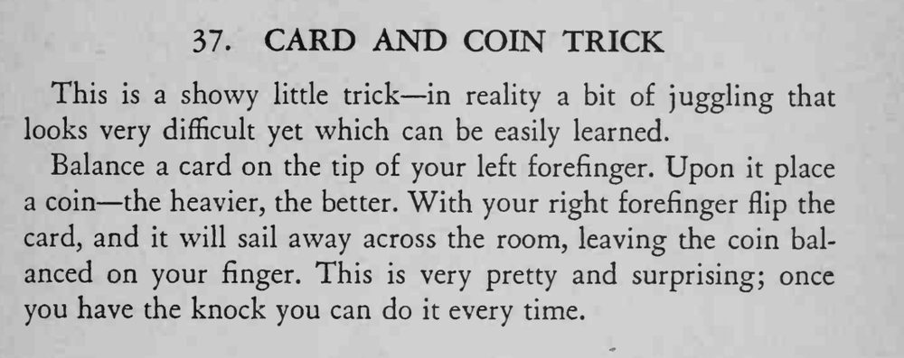

纸牌平衡在左手食指指尖上，牌上放着一枚硬币；右手食指一弹，纸牌飞出去，硬币却稳稳留在指尖。
关键是弹的力道和角度，多练几次就能掌握。

This is a showy little trick in reality a bit of juggling that looks very difficult yet which can be easily learned. Balance a card on the tip of your left forefinger. Upon it place a coin the heavier, the better. With your right forefinger flip the card, and it will sail away across the room, leaving the coin balanced on your finger. This is very pretty and surprising; once you have the knock you can do it every time.